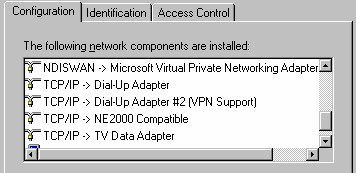

2 Protokol
Protokol adalah kumpulan instruksi atau prosedur sehingga membentuk kesatuan
seperti sebuah bahasa. Protokol ini diperlukan untuk menghubungkan berbagai jenis
komputer yang saling dihubungkan di dalam suatu jaringan.
Ada banyak protokol, namun untuk jaringan internet, protokol yang paling tepat
adalah TCP/IP.
Protokol TCP/IP bertugas mengolah data la lu mengirimkannya ke tujuan. Proses
pengolahan yang dilakukan TCP/IP adalah:
1. penyandian
2. pemeriksaan kesalahan
3. pencarian rute tercepat
4. pembukaan sandi di komputer tujuan
Secara garis besar TCP/IP terbagi dua, yaitu TCP (Transfer Control Protocol) dan IP
(Internet Protocol). Sesuai namanya, pembagian tugasnya adalah, TCP sebagai
penyandi data, pemeriksa dan pembuka sandi. Sedangkan IP bertugas dalam hal
pengiriman, yang meliputi pencarian rute paling efisien, pemeriksa kebenaran tujuan
dan penjaga keutuhan data yang dikirim.

Gambar 2.3 Contoh pemakaian protokol TCP/IP
Copyright © Herlan Lesmana
Created with the Freeware Edition of HelpNDoc: Create HTML Help, DOC, PDF and print manuals from 1 single source